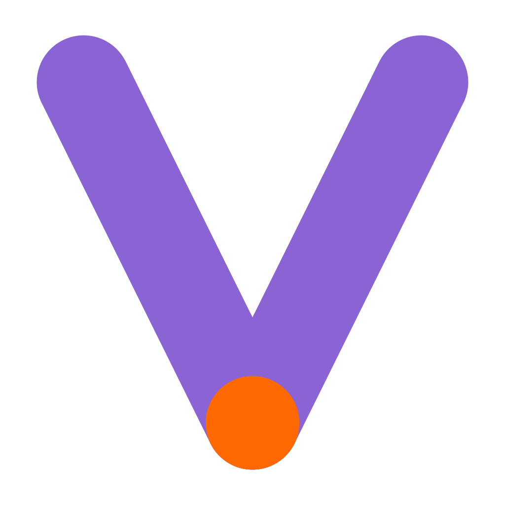
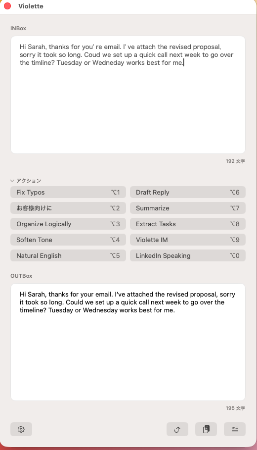

誤字だけ、さっと直す。
書き間違いを見つけて修正。送る前の見直しを、少し軽くします。
⌥ 1 Fix Typos

VioletteA LITTLE HELP FOR YOUR WORDS
伝えたいことは、もう書けている。
あとは、少し整えるだけ。
誤字を直す。言い回しをやわらげる。返信を下書きする。
Violetteは、Macのメニューバーから使える
小さな文章アシスタントです。
macOS 14以降・Apple Silicon

01 / EVERYDAY WORDS
大げさなプロンプトを考える前に。
よく使うひと手間を、アクションにしておきましょう。
書き間違いを見つけて修正。送る前の見直しを、少し軽くします。
⌥ 1 Fix Typos
お客様向けに丁寧に。強い言い回しをやわらかく。相手に合わせて整えます。
丁寧化 / トーン調整
要点を短くまとめたり、やることを取り出したり。文章の中身を整理します。
要約 / タスク抽出
受け取った文章から返信を下書き。自分で確かめ、手を入れてから使えます。
返信下書き / 自然な英語
よく使うことを、あなたの定番に。
10枠のアクションは、名前・プロンプト・AI・ショートカットをカスタマイズできます。
02 / A SMALL ROUTINE
専用の入力ウィンドウ「Composer」で、
原文と結果を見比べながら使えます。
INBoxに、整えたい文章を入力・貼り付け。
クリックやショートカットで実行。OUTBoxに結果が表示されます。
結果を確かめて、Insertで元の入力欄へ。自動で送信はしません。
挿入にはアクセシビリティ権限が必要です。入力先のアプリによって動作が異なる場合があります。
03 / MAKE IT YOURS
自分の文章をお手本に、文体の特徴を抽出。アクションや入力補完に反映できます。文体抽出の利用は任意です。
入力補完はベータ機能です。
Apple IntelligenceやOpenAI APIなどに対応。用途に合わせて、アクションごとにAIを選べます。
Apple IntelligenceにはmacOS 26以降が必要です。AIプロバイダによって別途設定や契約が必要です。